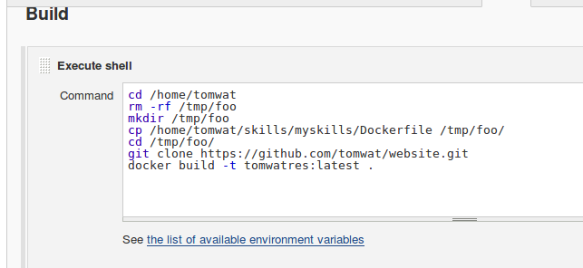

Jenkins tutorial on YouTube - Espisode 8 - Integration with Git:
https://www.youtube.com/watch?v=bGqS0f4Utn4&list=PLhW3qG5bs-L_ZCOA4zNPSoGbnVQ-rp_dG&index=8
Create a FreeStyle project called "MySkills"
Build - select Execute Shell
Source Code Management - Enable Git for SCM, and enter the URL of my github repository
(apparently credentials are not required)
Build Triggers - Poll SCM every 15 minutes for now
Create logic to extract files from github and build new image - screen shot below
